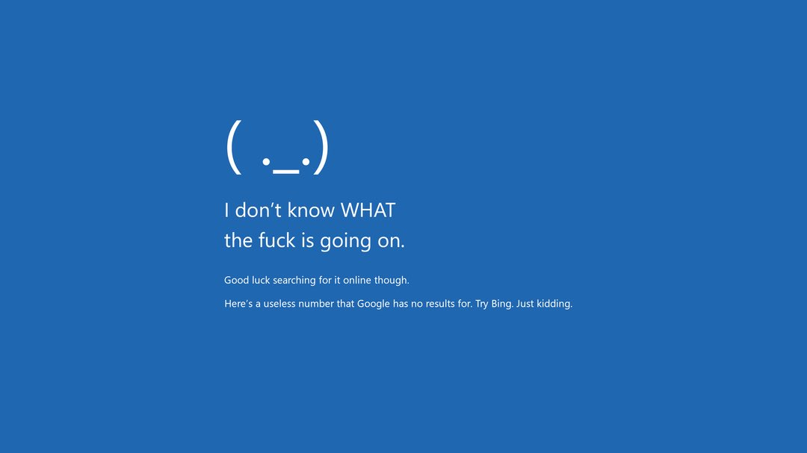

Markdown Test 测试
1. Basic Text and Headings 基础文本和标题
This is a normal paragraph 这是一个普通段落, containing some bold text 粗体文本 and italic text 斜体文本. You can also use strikethrough 删除线 and underline (HTML) 下划线.
1.1 Subheadings and Quotes 子标题和引用
This is a quote example 这是一个引用的例子
2. Lists 列表
2.1 Unordered List 无序列表
- List item A 列表项A
- List item B 列表项B
- Nested item B.1 嵌套项B.1
- Nested item B.2 嵌套项B.2
- List item C 列表项C
2.2 Ordered List 有序列表
- First ordered item 第一个有序项
- Second ordered item 第二个有序项
- Nested first 嵌套第一项
- Nested second 嵌套第二项
- Third ordered item 第三个有序项
3. Code Blocks 代码块
3.1 Inline Code 行内代码
You can use print("Hello, World!") #打印语句 in line.
3.2 Code Block 代码块
def greet(name):
print(f"Hello, {name}!") # 打印问候语
4. Tables 表格
| Header1 表头1 | Header2 表头2 | Header3 表头3 |
|---|---|---|
| Left align 左对齐 | Center 居中 | Right align 右对齐 |
| Data 数据1 | Data 数据2 | Data 数据3 |
5. Links 链接
This is an external link 外部链接. This is an internal link 内部链接.
6. LaTeX
such as or
7. 图片
7. Images 图片
Local Image 本地图片

Web Image 网络图片